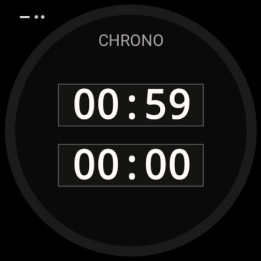
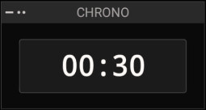

⏱
Chronomètre
Chronométrage · start/stop · reset
ANLCHR · analogique
NUMCHR · numérique (50%-1L)


Possibilités
- ANLCHR : 2 chronos empilés.
- NUMCHR : 1 chrono.
Gestes
·· Double-tap : start/stop
– Appui long : reset